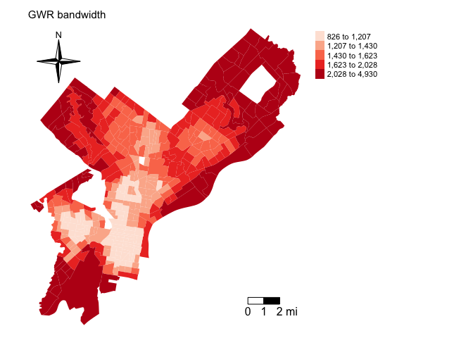
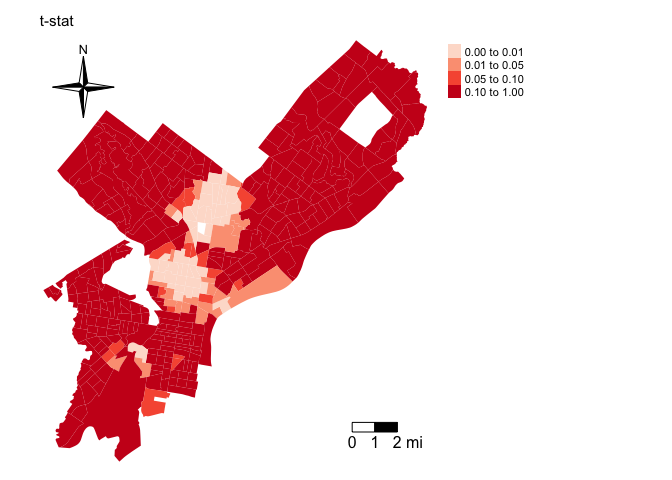
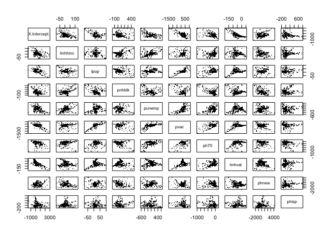

If we are interested in the influence or effect of some variable \(x\) on another variable \(y\), we run a regression model. If \(y\) is continuous, this model typically takes on the following form
\[y = \beta_0 + \beta_1 x + \varepsilon\]
The coefficient \(\beta_1\) represents the increase in \(y\) due to a one-unit increase in \(x\). This equation represents a global model, and \(\beta_1\) is applied to all spatial units in the study area.
The assumption is that the relationship between \(x\) and \(y\) is stationary. Stationarity is a general term in statistics, generally it means that something doesn’t change over time or space. In spatial statistics, stationarity equals the homogeneity of an effect, or, that a process works the same regardless of where you observe the process. This can can be a weak assumption, and we can ask, does \(x\) affect \(y\) differently at different geographic locations, or in terms of parameters: If we estimate that \(\beta_1\) = \(\sigma\), are there locations in the data where \(\beta_1\) does not equal \(\sigma\)?
In prior lab guides, we went through methods that explore and measure the unequal spatial distribution of a variable \(x\). For example, we used Moran’s I to measure global and local measures of spatial autocorrelation. In this lab guide, we will examine the unequal spatial distribution in the relationship between two variables \(x\) and \(y\). The method we will cover in this guide that captures this spatial heterogeneity is Geographically Weighed Regression (GWR).
We’ll be introducing the following package in this lab
install.packages("spgwr")Load in the following packages
library(sp)
library(spdep)
library(sf)
library(tmap)
We will be using the shapefile phil_tracts.shp. The file contains major building code violation rates at the census tract level in the City of Philadelphia. The file also contains demographic and socioeconomic neighborhood characteristics. The record layout can be found here.
I zipped up the files associated with the shapefile onto Github. Download the file, unzip it, and bring it into R using the following code.
setwd("insert your pathway here")
download.file(url = "https://raw.githubusercontent.com/crd230/data/master/phil_tracts.zip", destfile = "phil_tracts.zip")
unzip(zipfile = "phil_tracts.zip")
philly <- st_read("phil_tracts.shp")
We want to examine the relationship between neighborhood characteristics and major building code violation rates. Let’s run a basic Ordinary Least Squares (OLS) regression of number of major building code violations per area in square miles (usarea) on the following independent variables: Log median household income, log population size, percent non-Hispanic black, percent Hispanic, the unemployment rate, percent vacant units, percent of housing units built before 1970, percent of housing units built 2014 and after, and log median housing value.
fit.ols<-glm(usarea ~ lmhhinc + lpop + pnhblk + punemp + pvac + ph70 + lmhval +
phnew + phisp, data = philly)
summary(fit.ols)##
## Call:
## glm(formula = usarea ~ lmhhinc + lpop + pnhblk + punemp + pvac +
## ph70 + lmhval + phnew + phisp, data = philly)
##
## Deviance Residuals:
## Min 1Q Median 3Q Max
## -177.24 -34.81 -9.91 23.03 670.17
##
## Coefficients:
## Estimate Std. Error t value Pr(>|t|)
## (Intercept) 534.491 164.270 3.254 0.00124 **
## lmhhinc 2.462 12.176 0.202 0.83990
## lpop -1.344 6.338 -0.212 0.83216
## pnhblk 21.158 18.077 1.170 0.24260
## punemp -5.097 63.645 -0.080 0.93622
## pvac 371.699 58.427 6.362 5.96e-10 ***
## ph70 -79.691 35.535 -2.243 0.02552 *
## lmhval -45.668 10.458 -4.367 1.64e-05 ***
## phnew 17.958 319.042 0.056 0.95514
## phisp -56.308 30.695 -1.834 0.06741 .
## ---
## Signif. codes: 0 '***' 0.001 '**' 0.01 '*' 0.05 '.' 0.1 ' ' 1
##
## (Dispersion parameter for gaussian family taken to be 4829.927)
##
## Null deviance: 2938287 on 375 degrees of freedom
## Residual deviance: 1767753 on 366 degrees of freedom
## AIC: 4268.4
##
## Number of Fisher Scoring iterations: 2We find that the percent of vacant units is positively associated with the number of major building code violations per square mile, whereas the percent of units built before 1970 and log median housing value are negatively associated. This model assumes spatial homogeneity in these relationships. Let’s examine whether this assumption of homogeneity is appropriate by running a GWR.
First proposed by Brundson et al. (1996), the GWR estimates \(\beta_p\) at each location \(i\), using the centroids for polygon data. The model takes on the following form
\[y_i = \beta_{i0} + \beta_{i1} x_{i1} + ... \beta_{ip} x_{ip} + \varepsilon_{i}\]
where \(\beta_{ip}\) is the local realization of \(\beta_p\) at location \(i\). This constructs a trend surface of parameter values for each independent variable and the model intercept.
GWR is an outgrowth of ordinary least squares regression (OLS); and adds a level of modeling sophistication by allowing the relationships between the independent and dependent variables to vary by locality. Note that the basic OLS regression model above is just a special case of the GWR model where the coefficients are constant over space. The parameters in the GWR are estimated by weighted least squares. The weighting matrix is a diagonal matrix, with each diagonal element \(w_{ij}\) being a function of the location of the observation. The role of the weight matrix is to give more value to observations that are close to \(i\), as it is assumed that observations that are close will influence each other more than those that are far away (Tobler’s Law).
There are three major decisions to make when running a GWR: (1) the kernel density function assigning weights \(w_{ij}\), (2) the bandwidth \(h\) of the function, which determines the degree of distance decay, and (3) who to count as neighbors.
The kernel density function determines the weight assigned to neighboring units. A common density function is a Gaussian weighting function
\[ w_{ij} = exp(-\frac{d_{ij}^2}{h^2}) \]
where \(d_{ij}\) is the distance between location \(i\) and \(j\) and \(h\) is the bandwidth.
Other common density functions include an Exponential function
\[w_{ij} = exp(-\frac{d_{ij}}{h})\]
a bi-square function
\[w_{ij} = 1-(\frac{d_{ij}^2}{h^2})^2\]
and a tri-cube function
\[w_{ij} = 1-(\frac{d_{ij}^3}{h^3})^3\]
Choosing a weighting function also involves choosing a bandwidth h. There are several ways to do this. R uses two methods. The first uses a cross-validation method to choose the optimal kernel bandwidth. The cross validation method takes the form
\[CV = \sum_i \left[y_i - \hat{y}_{\neq i}(\beta)\right]^2\]
where \(\hat{y}_{\neq i}(\beta)\) is the fitted value of \(y_i\) with the observations for point \(i\) omitted from the calibration process. Here, were trying to find the \(h\) that minimizes \(CV\). This in effect minimizes the sum of squared errors at all locations \(i\), and arrives at an optimal bandwidth. The other method chooses a bandwidth the minimizes the Akaike Information Criterion (AIC).
To run a GWR, you need to load in the packages spgwr
library(spgwr)You also need to turn philly into an sp object.
philly.sp <- as(philly, "Spatial")In order to calculate an optimal bandwidth in R, use the command gwr.sel(). The default method is cross-validation
gwr.b1<-gwr.sel(usarea ~ lmhhinc + lpop + pnhblk + punemp + pvac + ph70 +
lmhval + phnew + phisp, philly.sp)Let’s see what the the estimated optimal bandwidth is.
gwr.b1## [1] 1322.708This is the distance (in meters, because our data are projected in a system measured in meters), which the weighting function will search, and include all observations within this radius. This also represents your value \(h\). Look at the R help file for gwr.sel() to determine how to change the selection method from minimizing CV to minimizing AIC.`
Plug the bandwidth into the function gwr(), which runs the GWR model, using the argument bandwidth
gwr.fit1<-gwr(usarea ~ lmhhinc + lpop + pnhblk + punemp + pvac + ph70 + lmhval +
phnew + phisp, data = philly.sp, bandwidth = gwr.b1, se.fit=T, hatmatrix=T)Don’t use summary() for a GWR object. Just type the object name and you will get back the relevant summary information for the model.
gwr.fit1## Call:
## gwr(formula = usarea ~ lmhhinc + lpop + pnhblk + punemp + pvac +
## ph70 + lmhval + phnew + phisp, data = philly.sp, bandwidth = gwr.b1,
## hatmatrix = T, se.fit = T)
## Kernel function: gwr.Gauss
## Fixed bandwidth: 1322.708
## Summary of GWR coefficient estimates at data points:
## Min. 1st Qu. Median 3rd Qu. Max.
## X.Intercept. -1574.4098 -53.8875 88.4952 472.7282 3092.1466
## lmhhinc -151.0306 -7.0538 3.2205 22.3099 120.2753
## lpop -76.6700 1.1576 7.2067 20.4788 109.5747
## pnhblk -124.9781 -2.0948 44.5163 100.0885 490.8730
## punemp -627.4200 -150.5909 -17.8892 69.6271 752.1507
## pvac -1329.2458 2.5473 165.4452 343.9353 1108.9034
## ph70 -1028.8902 -161.7810 -43.4011 -8.2491 144.6265
## lmhval -178.5925 -70.3725 -26.7389 -3.7657 89.1748
## phnew -3747.6137 -484.6544 54.6557 734.6135 6434.5611
## phisp -313.3416 -24.9975 4.8295 117.2091 1533.6439
## Global
## X.Intercept. 534.4908
## lmhhinc 2.4616
## lpop -1.3441
## pnhblk 21.1576
## punemp -5.0966
## pvac 371.6993
## ph70 -79.6910
## lmhval -45.6676
## phnew 17.9575
## phisp -56.3076
## Number of data points: 376
## Effective number of parameters (residual: 2traceS - traceS'S): 220.8092
## Effective degrees of freedom (residual: 2traceS - traceS'S): 155.1908
## Sigma (residual: 2traceS - traceS'S): 59.06332
## Effective number of parameters (model: traceS): 178.5045
## Effective degrees of freedom (model: traceS): 197.4955
## Sigma (model: traceS): 52.3567
## Sigma (ML): 37.9452
## AICc (GWR p. 61, eq 2.33; p. 96, eq. 4.21): 4491.91
## AIC (GWR p. 96, eq. 4.22): 3979.926
## Residual sum of squares: 541379.3
## Quasi-global R2: 0.81575We’ll go through the summary output later in the guide. The default weighting function is the Gaussian function, which we can change to a bi-square function through the gweight argument. We have to specify this function in both estimating the optimal bandwidth and running GWR
gwr.b2<-gwr.sel(usarea ~ lmhhinc + lpop + pnhblk + punemp + pvac + ph70 + lmhval +
phnew + phisp, data = philly.sp, gweight = gwr.bisquare)
gwr.fit2<-gwr(usarea ~ lmhhinc + lpop + pnhblk + punemp + pvac + ph70 + lmhval +
phnew + phisp, data = philly.sp, bandwidth = gwr.b2, gweight = gwr.bisquare, se.fit=T,
hatmatrix=T)And the results
gwr.b2## [1] 5092.898gwr.fit2## Call:
## gwr(formula = usarea ~ lmhhinc + lpop + pnhblk + punemp + pvac +
## ph70 + lmhval + phnew + phisp, data = philly.sp, bandwidth = gwr.b2,
## gweight = gwr.bisquare, hatmatrix = T, se.fit = T)
## Kernel function: gwr.bisquare
## Fixed bandwidth: 5092.898
## Summary of GWR coefficient estimates at data points:
## Min. 1st Qu. Median 3rd Qu. Max.
## X.Intercept. -649.3890 -5.7699 134.6249 512.9574 2336.5957
## lmhhinc -180.3145 -4.4545 1.7487 13.7554 68.2914
## lpop -49.1608 1.2314 6.3430 19.0823 69.7005
## pnhblk -106.4233 1.3658 41.0256 96.5291 285.2134
## punemp -397.5988 -143.8982 -6.2685 57.4553 729.4700
## pvac -757.5534 8.8245 209.8576 370.7793 650.3669
## ph70 -643.0070 -207.9799 -66.3040 -19.8028 142.9682
## lmhval -150.2726 -69.5496 -34.8198 -6.7118 107.7625
## phnew -1844.6086 -418.1211 19.6153 509.9117 7421.2055
## phisp -221.0604 -26.5670 -7.5865 84.2566 1418.3152
## Global
## X.Intercept. 534.4908
## lmhhinc 2.4616
## lpop -1.3441
## pnhblk 21.1576
## punemp -5.0966
## pvac 371.6993
## ph70 -79.6910
## lmhval -45.6676
## phnew 17.9575
## phisp -56.3076
## Number of data points: 376
## Effective number of parameters (residual: 2traceS - traceS'S): 132.4964
## Effective degrees of freedom (residual: 2traceS - traceS'S): 243.5036
## Sigma (residual: 2traceS - traceS'S): 62.2312
## Effective number of parameters (model: traceS): 107.6713
## Effective degrees of freedom (model: traceS): 268.3287
## Sigma (model: traceS): 59.2826
## Sigma (ML): 50.0803
## AICc (GWR p. 61, eq 2.33; p. 96, eq. 4.21): 4316.932
## AIC (GWR p. 96, eq. 4.22): 4117.761
## Residual sum of squares: 943021.6
## Quasi-global R2: 0.6790573
The GWR models we ran above yielded a fixed distance to search for neighbors to include in the local regression. But there are places in our data where tracts are more densely occurring. This means that in some areas, specifically in downtown Philadelphia, you’ll include a larger number of neighboring tracts in the local regression compared to other areas, such as large tracts on the periphery of the city’s boundaries. In this case, an adaptive kernel is suitable. Figure 5 in Week 8’s handout shows the differences between a fixed and adaptive kernel function. In the left graphic, the regressions include different number of observations because the left area is more dense than the right. In contrast, the adaptive kernel narrows in the left graphic in order to capture an equal number of observations.
In order to specify an adaptive kernel, specify adapt = TRUE when finding the optimal bandwidth using gwr.sel().
gwr.b3<-gwr.sel(usarea ~ lmhhinc + lpop + pnhblk + punemp + pvac + ph70 +
lmhval + phnew + phisp, data = philly.sp, adapt = TRUE)We get the value
gwr.b3## [1] 0.02491844This value is the proportion of all cases which the weighting function will search, and include this fraction of observations in a model for each tract. The bandwidth distance will change according to the spatial density of features in the input feature class. The bandwidth becomes a function of the number of nearest neighbors such that each local estimation is based on the same number of features. Instead of a specific distance, the number of neighbors used for the analysis is reported.
Plug the bandwidth into the function gwr(), which runs the GWR model, using the argument adapt
gwr.fit3<-gwr(usarea ~ lmhhinc + lpop + pnhblk + punemp + pvac + ph70 + lmhval +
phnew + phisp, data = philly.sp, adapt=gwr.b3, se.fit=T, hatmatrix=T)
When presenting results of a GWR, you want to first show the distribution of coefficients for each variable. You’ll also want to present the estimates of the global model. Typing in gwr.fit3 in R gives you this information, specifically the minimum, 25th percentile, median, 75th percentile, and maximum values of each variable’s coefficients, along with the global regression coefficients and measures of model fit.
gwr.fit3## Call:
## gwr(formula = usarea ~ lmhhinc + lpop + pnhblk + punemp + pvac +
## ph70 + lmhval + phnew + phisp, data = philly.sp, adapt = gwr.b3,
## hatmatrix = T, se.fit = T)
## Kernel function: gwr.Gauss
## Adaptive quantile: 0.02491844 (about 9 of 376 data points)
## Summary of GWR coefficient estimates at data points:
## Min. 1st Qu. Median 3rd Qu. Max.
## X.Intercept. -1413.25718 2.04814 150.67770 593.38119 2856.09861
## lmhhinc -77.30238 -6.62505 2.08877 20.59832 121.03243
## lpop -71.53993 0.32328 6.55222 19.42020 93.59455
## pnhblk -139.33868 -0.35274 39.43998 102.07286 462.87992
## punemp -592.27650 -109.64202 -3.93096 63.56270 623.38186
## pvac -1410.12965 11.95427 193.34738 350.39251 1047.77143
## ph70 -975.65611 -190.62161 -67.38336 -13.17506 137.47857
## lmhval -185.48730 -73.39044 -36.70912 -7.56967 48.91389
## phnew -2570.54553 -577.37945 29.21937 654.40082 4045.23829
## phisp -182.91660 -29.72723 -7.23980 65.71058 771.29484
## Global
## X.Intercept. 534.4908
## lmhhinc 2.4616
## lpop -1.3441
## pnhblk 21.1576
## punemp -5.0966
## pvac 371.6993
## ph70 -79.6910
## lmhval -45.6676
## phnew 17.9575
## phisp -56.3076
## Number of data points: 376
## Effective number of parameters (residual: 2traceS - traceS'S): 177.8408
## Effective degrees of freedom (residual: 2traceS - traceS'S): 198.1592
## Sigma (residual: 2traceS - traceS'S): 54.21695
## Effective number of parameters (model: traceS): 135.2358
## Effective degrees of freedom (model: traceS): 240.7642
## Sigma (model: traceS): 49.18654
## Sigma (ML): 39.35938
## AICc (GWR p. 61, eq 2.33; p. 96, eq. 4.21): 4258.02
## AIC (GWR p. 96, eq. 4.22): 3964.174
## Residual sum of squares: 582484.4
## Quasi-global R2: 0.8017605The object gwr.fit3 is a gwr object. The object contains a number of other objects. For example, typing in gwr.fit3$results gives you overall model results such as the AIC. Typing in gwr.fit3$bandwidth gives you the bandwidth values for each of the 376 tracts in the dataset. The fixed bandwidth object instead yields just one value which is the bandwidth used for all tracts
gwr.fit1$bandwidth## [1] 1322.708Compared to
gwr.fit3$bandwidthPlot this bandwidth and you’ll find that smaller bandwidths are in smaller tracts primarily located in downtown Philadelphia.
philly$bwadapt <- gwr.fit3$bandwidth
tm_shape(philly, unit = "mi") +
tm_polygons(col = "bwadapt", style = "quantile",palette = "Reds",
border.alpha = 0, title = "") +
tm_scale_bar(breaks = c(0, 1, 2), size = 1, position = c("right", "bottom")) +
tm_compass(type = "4star", position = c("left", "top")) +
tm_layout(main.title = "GWR bandwidth", main.title.size = 0.95, frame = FALSE, legend.outside = TRUE)
One item within the gwr object is called SDF and this is the spatial polygons data frame containing the 376 regression model estimates. Get the names of the objects within SDF
names(gwr.fit3$SDF)The variables X.Intercept. to phisp give the regression coefficients. X.Intercept.se to phisp_se give the coefficient standard errors.
In addition to mapping coefficient sizes, you should also map whether these coefficients are statistically significant. Unfortunately, R doesn’t have that information neatly compiled for you. But, you can use the coefficient size and standard error to get a t-statistic, which you can then map onto a t distribution to find the pvalue. Specifically, when testing \(H_0: \hat{\beta}_p = 0\) against the alternative \(H_1: \hat{\beta}_p \neq 0\), one assesses the magnitude of the \(t\) ratio
Under the null hypothesis, the \(t\) ratio follows a \(t\) distribution, and hence one can calculate the probability. To do this in R, first get the degrees of freedom from the gwr results object
dfree<-gwr.fit3$results$edfNext, calculate the t ratio. Save this in your spatial data frame. Let’s do this for the variable pnhblk
philly$pnhblk.t <- gwr.fit3$SDF$pnhblk/gwr.fit3$SDF$pnhblk_seNext, calculate the pvalue using the pt() command (type in ? pt to see what this command is doing). You’ll have to multiply the value by 2 to get a two-tail t test
philly$pnhblk.t.p<-2*pt(-abs(philly$pnhblk.t), dfree)You can map the pvalue
breaks <- c(0,0.01,0.05,0.1,1)
tm_shape(philly, unit = "mi") +
tm_polygons(col = "pnhblk.t.p",palette = "Reds", breaks = breaks,
border.alpha = 0, title = "") +
tm_scale_bar(breaks = c(0, 1, 2), size = 1, position = c("right", "bottom")) +
tm_compass(type = "4star", position = c("left", "top")) +
tm_layout(main.title = "t-stat", main.title.size = 0.95, frame = FALSE, legend.outside = TRUE)
What are the results suggesting about the spatial heterogeneity of the relationship between percent black and major building code violations?
GWR builds a local regression equation for each feature in the dataset. When the values for a particular explanatory variable cluster spatially, you will very likely have problems with local multicollinearity. This is also a problem when sample sizes are small (Wheeler 2007). Consequences of local collinearity include estimated regression coefficients with increased magnitude and counterintuitive signs, inflated variances of regression coefficients, and insignificant statistical test values
One way to gauge the degree of multicollinearity is to examine correlations between the coefficients produced by the GWR. To do this in R, use the cor() command
round(cor(as.data.frame(gwr.fit3$SDF[,2:11]), use ="complete.obs"),2)## X.Intercept. lmhhinc lpop pnhblk punemp pvac ph70 lmhval
## X.Intercept. 1.00 -0.38 -0.36 -0.07 -0.45 -0.59 -0.44 -0.76
## lmhhinc -0.38 1.00 -0.12 0.48 0.44 0.12 -0.02 -0.20
## lpop -0.36 -0.12 1.00 -0.15 0.26 0.79 0.14 0.09
## pnhblk -0.07 0.48 -0.15 1.00 -0.20 -0.16 -0.56 -0.23
## punemp -0.45 0.44 0.26 -0.20 1.00 0.63 0.48 0.10
## pvac -0.59 0.12 0.79 -0.16 0.63 1.00 0.41 0.27
## ph70 -0.44 -0.02 0.14 -0.56 0.48 0.41 1.00 0.48
## lmhval -0.76 -0.20 0.09 -0.23 0.10 0.27 0.48 1.00
## phnew 0.32 -0.32 0.04 -0.39 0.02 -0.15 0.00 -0.17
## phisp -0.11 0.12 0.04 0.17 -0.03 -0.02 -0.34 0.02
## phnew phisp
## X.Intercept. 0.32 -0.11
## lmhhinc -0.32 0.12
## lpop 0.04 0.04
## pnhblk -0.39 0.17
## punemp 0.02 -0.03
## pvac -0.15 -0.02
## ph70 0.00 -0.34
## lmhval -0.17 0.02
## phnew 1.00 0.05
## phisp 0.05 1.00You check correlations visually by using the pairs() command
pairs(as(gwr.fit3$SDF, "data.frame")[,2:11], pch=".")
It is recommended that researchers do model selection and diagnosis as part of their analyses when using GWR in order to avoid or reduce multicollinearity (Wheeler and Tiefelsdorf 2005).
I don’t believe a GWR should take precedence over a traditional OLS or any of the spatial regression models we covered in class. That is, a GWR is a nice method to supplement traditional global models, but should not be considered an inferential tool in the same way that global models can be. Nevertheless, we can still compare the “fit” of a GWR relative to an OLS or any other regression model.
One way of doing this is to compare AIC values. The GWR output offers three different ways to measure AIC.
gwr.fit3$results$AICh## [1] 3964.174gwr.fit3$results$AICc## [1] 4349.03gwr.fit3$results$AICb## [1] 4258.02Compare these AICs to the OLS AIC
AIC(fit.ols)## [1] 4268.359The downside of the AIC is that it offers no inferential way of detecting whether differences are statistically different from one another. The package spgwr has a suite of tests comparing OLS and GWR models under an inferential framework. These tests are described in Fotheringham et al. (2002). The null in these tests is the OLS and thus a statistically significant test statistic indicates that the GWR provides a statistically significant improvement over an OLS in terms of its ability to match observed values. The tests in R code are as follows
BFC02.gwr.test(gwr.fit3)##
## Brunsdon, Fotheringham & Charlton (2002, pp. 91-2) ANOVA
##
## data: gwr.fit3
## F = 3.0349, df1 = 366.00, df2 = 198.16, p-value < 2.2e-16
## alternative hypothesis: greater
## sample estimates:
## SS OLS residuals SS GWR residuals
## 1767753.4 582484.4BFC99.gwr.test(gwr.fit3)##
## Brunsdon, Fotheringham & Charlton (1999) ANOVA
##
## data: gwr.fit3
## F = 2.4024, df1 = 333.76, df2 = 260.43, p-value = 2.142e-13
## alternative hypothesis: greater
## sample estimates:
## SS GWR improvement SS GWR residuals
## 1185269.0 582484.4LMZ.F1GWR.test(gwr.fit3)##
## Leung et al. (2000) F(1) test
##
## data: gwr.fit3
## F = 0.6086, df1 = 260.43, df2 = 366.00, p-value = 1.108e-05
## alternative hypothesis: less
## sample estimates:
## SS OLS residuals SS GWR residuals
## 1767753.4 582484.4LMZ.F2GWR.test(gwr.fit3)##
## Leung et al. (2000) F(2) test
##
## data: gwr.fit3
## F = 1.4621, df1 = 233.86, df2 = 366.00, p-value = 0.0005763
## alternative hypothesis: greater
## sample estimates:
## SS OLS residuals SS GWR improvement
## 1767753 1185269LMZ.F3GWR.test(gwr.fit3)##
## Leung et al. (2000) F(3) test
##
## F statistic Numerator d.f. Denominator d.f. Pr(>)
## (Intercept) 0.94419 122.59061 260.43 0.6369477
## lmhhinc 0.57486 105.11265 260.43 0.9993521
## lpop 0.83970 117.68318 260.43 0.8595358
## pnhblk 1.43484 89.33826 260.43 0.0151795 *
## punemp 0.92026 119.99577 260.43 0.6949096
## pvac 2.94794 106.14539 260.43 1.055e-12 ***
## ph70 1.69122 100.67109 260.43 0.0004901 ***
## lmhval 0.91483 116.24838 260.43 0.7054314
## phnew 0.22495 11.59110 260.43 0.9966467
## phisp 0.35611 40.49489 260.43 0.9999100
## ---
## Signif. codes: 0 '***' 0.001 '**' 0.01 '*' 0.05 '.' 0.1 ' ' 1The first 4 tests compare overall model fit whereas the last test examines spatial variation in individual coefficients. All 4 overall model fit tests show that the GWR shows significant improvement in explanatory power over an OLS. The last model shows that the variables pvac, phnblk, and ph70 indicate statistically significant spatial heterogeneity in its GWR coefficients. These results indicate that there is spatial heterogeneity in the relationships between our covariates and major build code violations. Look at the distribution of the GWR coefficients for pvac, phnblk, and ph70 to see the range of variation between the local coefficients.
Website created and maintained by Noli Brazil